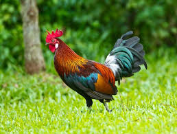
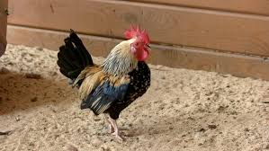

Петухи отличаются от несушек более яркой внешностью, поразительным оперением, длинным распущенным хвостом и заостренными перьями на шее и спине. На ногах имеются шпоры, как на ковбойских сапогах. ... Петух птица красивая, но достаточно тяжелая, чья походка увесистая и медленная.
Петухи всеядные, употребляют семена, насекомых, и даже ящериц, маленьких змей или молодых мышей. Для поиска пищи петух скребет землю и глотает песок и частички камней с зерном, которые помогают пищеварению.
 